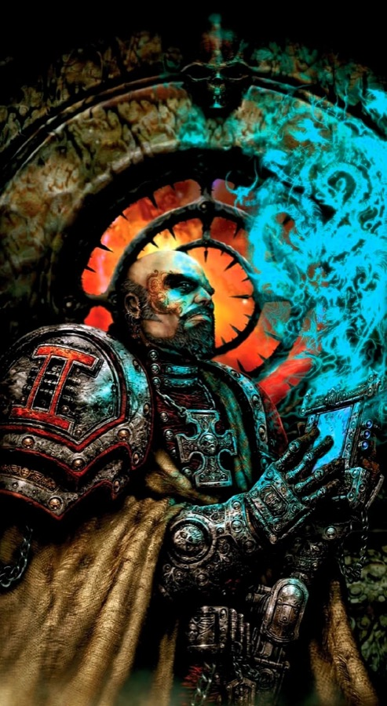

Jaq Draco
| Jaq Draco | |
|---|---|
| Inquisitor of the Ordo Malleus | |
 Votive portrait of Inquisitor Draco Artwork © Games Workshop | |
| Inquisitor of the Ordo Malleus | |
| Tenure | Late M38 to early M39 |
| Predecessor | Not recorded |
| Successor | Not recorded |
| Born | Late M38, Xerxes Quintus |
| Died | Early M39, the Webway (estimated) |
| Allegiance | Imperium of Mankind, Inquisition; declared Renegade |
| Starship | ''Tormentum Malorum'' |
| Wargear | ''Emperor's Mercy'' bolt pistol, Power axe, Psycannon, alien force rod |
| Known for | Opposing the Ordo Hydra; audience with the Emperor; entering the Black Library |
Jaq Draco was a secret Inquisitor of the Ordo Malleus, active in the late 38th and early 39th millennia. According to the surviving reports he uncovered a conspiracy of senior Inquisitors known as the Ordo Hydra, and learned from it something about the condition of the Emperor's mind that the Imperium has never admitted.[1]
The Inquisition officially acknowledges no record of him. Some scholars of the Adeptus Terra hold that he never lived and that his deeds were an invention of the Aeldari or of the forces of Chaos, meant to unsettle faith in the Inquisition and the Throne. The Inquisition encourages that view, and any new mention of the name is liable to be purged as hostile disinformation.[1] This article records the account as it survives in sealed Ordo files and in the testimony of those who claim to have known him.
Early life
[edit]Draco was born in the late 38th millennium on Xerxes Quintus, a low-technology agri-world full of psykers and mutants. The planet had been cut off for thousands of years and was recontacted by the Imperium of Mankind about a century before his birth. After his parents, Imperial geneticists posted to the world, were murdered by possessed local psykers, he was raised in an Adeptus Ministorum orphanage.[1]
At twelve he showed psychic gifts of unusual purity: he could perceive the Astronomican and hide his presence from Warp entities. A Black Ship took him, and he entered the Hidden Chambers of the Ordo Malleus. By thirty-five his body was covered from the neck down in ritual markings, one for each daemon he had overcome. He was never a strict member of the Puritan faction and was willing to entertain doubt, particularly where the lives of civilians and his retinue were at stake.[1]
The Ordo Hydra
[edit]Early in the 39th millennium Draco was sent to Stalinvast, where the Illuminati agent Zephro Carnelian approached him. Farseers allied to that cabal had foreseen that Draco would be needed to prevent a disaster for the whole galaxy. The Illuminati steered him into the Ordo Hydra, a faction hidden in the Inquisition, as an unwilling double agent.[1]
He learned that the Ordo Hydra meant to bind all of Humanity into a single psychic mind and turn that power against Chaos. Such a working would very probably have created a fifth Chaos God. Draco travelled to Terra, entered the Imperial Palace and spoke mind to mind with the Emperor in the Golden Throne chamber. He asked Him to stop the plot. The audience left him doubtful of the Emperor's stability and of the Imperium's chances of survival. The records do not say what was done to the Ordo Hydra, but the plot failed.[1][2]
The Black Library
[edit]Draco then spent a hundred years in stasis. On waking he learned that the Inquisition had declared him Renegade for the ''Exterminatus'' on Stalinvast and for his dealings with the Illuminati. He then did what no mortal is known to have done: without Aeldari leave he entered the Webway, found the Black Library and took from it the ''Book of Rhana Dandra'', an Aeldari prophecy of the end of the galaxy.[3]
He learned the Aeldari tongue from a captured Harlequin and used the book to locate a crossroads in the Webway where time can be reversed. Magnus the Red of the Thousand Sons sought the same book for Tzeentch and attacked Draco's refuge on Sabulorb, which was later lost to anarchy and disaster.[3]
Death
[edit]When events at the crossroads went against him, Draco tricked a companion, the Imperial Fists captain Lexandro d'Arquebus, into believing he was possessed by a daemon of Tzeentch. The companion killed him as they had agreed beforehand. His mind may have survived as a disembodied presence in the Webway.[3][a]
Retinue and works
[edit]His retinue included the Callidus Assassin Meh'lindi, the Squat enginseer Grimm and several Navigators and astropaths. He travelled in the stealth ship ''Tormentum Malorum'', and wrote the ''Liber Secretorum'', his account of the Ordo Hydra, now held in the ''Librarium Obscurum'' of the Ordo Malleus.[1]
Timeline
[edit]| Date | Event |
|---|---|
| Late M38 | Born on Xerxes Quintus |
| Early M39 | Mission to Stalinvast; recruited into the Ordo Hydra; audience with the Emperor on Terra |
| Early M39, followed by c. 100 years of stasis | Enters stasis; declared Renegade in his absence |
| Early M39 (estimated) | Takes the ''Book of Rhana Dandra'' from the Black Library; killed at the crossroads in the Webway |
See also
[edit]Notes
[edit]- ^ The sources place his death in the early 39th millennium, but also place a century of stasis before it. The order and spacing of these events is not settled, and the dates here are estimates.